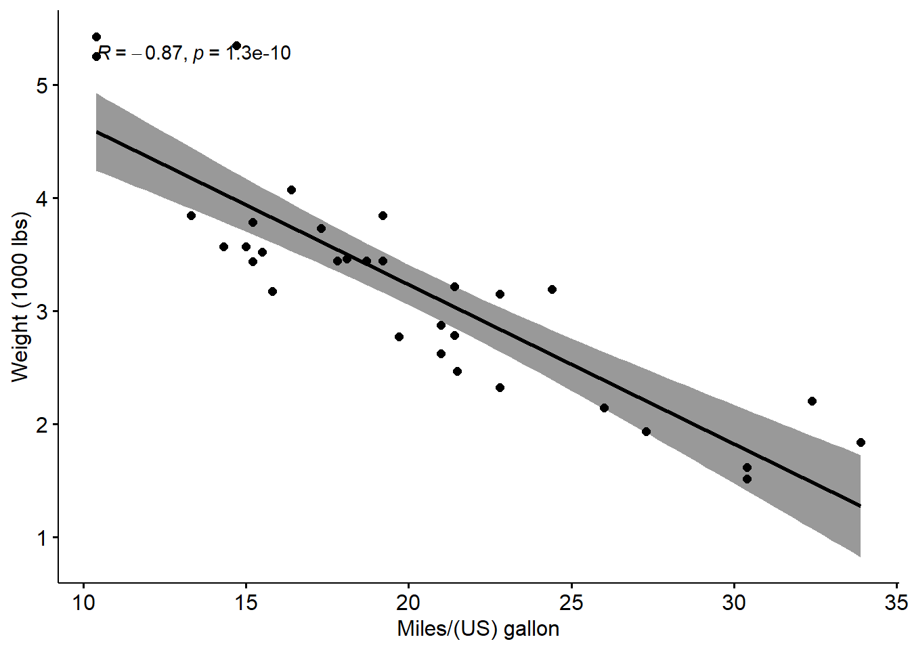
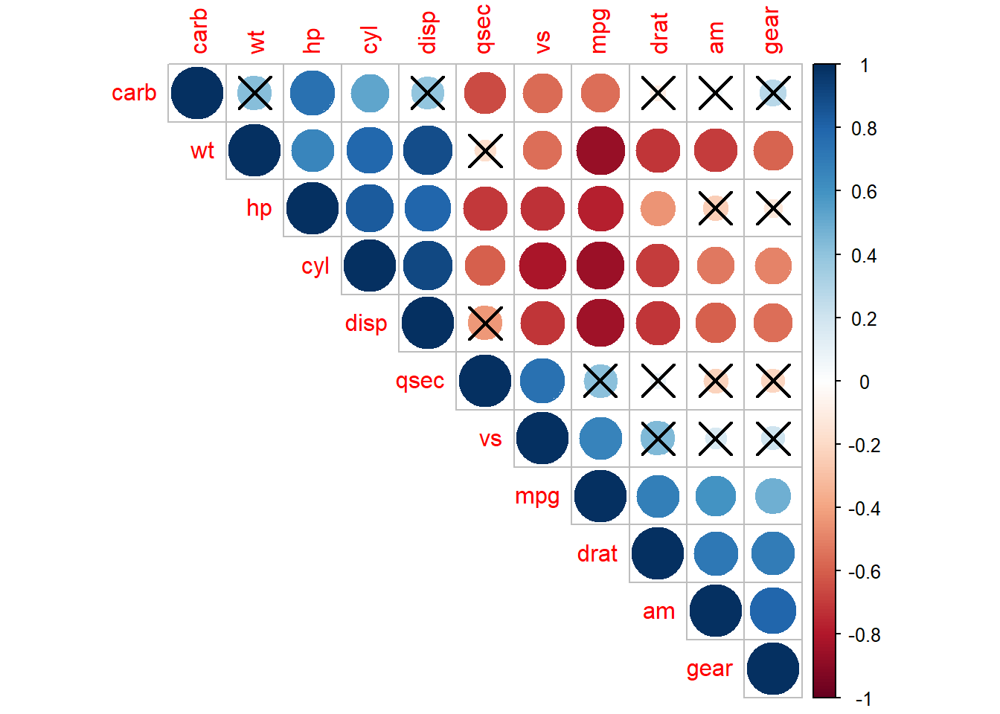
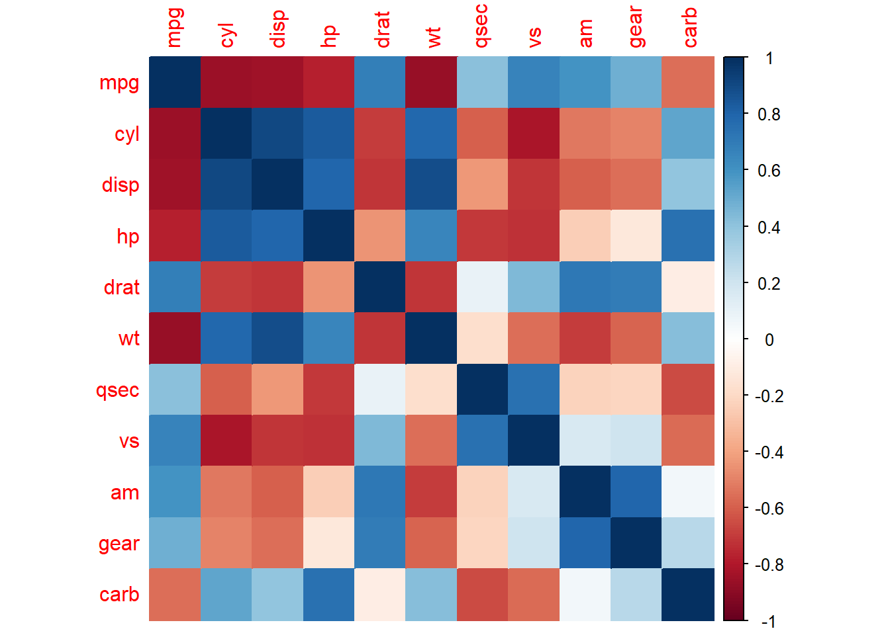
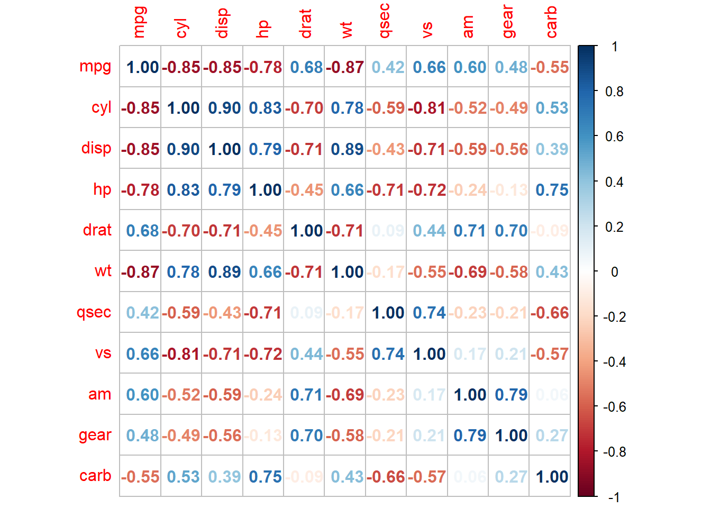

8 Correlation Analysis
Objective: To learn how to perform correlation analysis in R
We will cover:
- cor.test(x,y, method) computes the correlation coefficient and significance between two variables
- cor() creates correlation matrix from a numeric matrix/data frame
- in corrplot package, cor.mtest() gives p-values and corrplot() plots a graph (i.e. correlogram) of a correlation matrix
What is correlation test?
- Correlation test is used to evaluate the association between two or more continuous (numeric) variables.
8.1 Correlation Methods
(Note: Ref for formulas: http://www.sthda.com/english/wiki/correlation-test-between-two-variables-in-r)
Pearson correlation: - parametric test, which measures a linear dependence between two variables (x and y) - Correlation coefficient (r) is a value between -1 and 1: -1 - strong negative correlation: x increases, y decreases () 0 - no association between the two variables (x and y) (-) 1 - strong positive correlation: x increases, y increases (/)
- Kendall tau and Spearman rho are rank-based correlation coefficients (non-parametric)
Compute correlation in R
** R functions**
cor() computes just correlation coefficient (acts on vectors and data frames)
cor.test() computes correlation coefficient and p-value
Arguments: x, y = numeric vectors with the same length method = correlation method, e.g. “pearson”
return values: p.value = p-value of the test estimate = the correlation coefficient
Here, we’ll use the built-in R data set mtcars for our analysis
# Look at the first 6 rows
head(mtcars, 6)## mpg cyl disp hp drat wt qsec vs am gear carb
## Mazda RX4 21.0 6 160 110 3.90 2.620 16.46 0 1 4 4
## Mazda RX4 Wag 21.0 6 160 110 3.90 2.875 17.02 0 1 4 4
## Datsun 710 22.8 4 108 93 3.85 2.320 18.61 1 1 4 1
## Hornet 4 Drive 21.4 6 258 110 3.08 3.215 19.44 1 0 3 1
## Hornet Sportabout 18.7 8 360 175 3.15 3.440 17.02 0 0 3 2
## Valiant 18.1 6 225 105 2.76 3.460 20.22 1 0 3 1Visualize your data using scatter plots
library("ggpubr")
# ggscatter() creates a scatter plot
ggscatter(mtcars, x = "mpg", y = "wt", # specify data and aesthetics
add = "reg.line", conf.int = TRUE, # add regression to plot
cor.coef = TRUE, cor.method = "pearson", #label correlation coeffient
xlab = "Miles/(US) gallon", ylab = "Weight (1000 lbs)") # label axes## `geom_smooth()` using formula 'y ~ x'
Run Pearson correlation test
res <- cor.test(mtcars$wt, mtcars$mpg, method = "pearson")
res##
## Pearson's product-moment correlation
##
## data: mtcars$wt and mtcars$mpg
## t = -9.559, df = 30, p-value = 1.294e-10
## alternative hypothesis: true correlation is not equal to 0
## 95 percent confidence interval:
## -0.9338264 -0.7440872
## sample estimates:
## cor
## -0.8676594# In the result above:
# t is the t-test statistic value (t = -9.559),
# df is the degrees of freedom (df= 30),
# p-value is the significance level of the t-test (p-value = 1.29410^{-10}).
# conf.int is the confidence interval of the correlation coefficient at 95% (conf.int = [-0.9338, -0.7441]);
# sample estimates is the correlation coefficient (Cor.coeff = -0.87).
#
# Interpretation of result:
# - p-value < 0.05 and r = -0.87 < 0. So wt and mpg are significantly correlated and strongly negatively correlated.Recall: result is a list object
# "res" is a list object so we can extract values from the result
# Extract the p.value
res$p.value## [1] 1.293959e-10# Extract the correlation coefficient
res$estimate## cor
## -0.86765948.2 Correlation Matrix:
** Analyze, Format and Visualize**
Correlation matrix is used to analyze the correlation between multiple variables at the same time (performs pairwise correlation tests)
Draw scatter plots using chart.Correlation()
The function chart.Correlation() can be used to display multiple charts for a correlation matrix.
# # # Install package
# # install.packages("PerformanceAnalytics")
# # Load package into environment
# library("PerformanceAnalytics")
# # Subset data frames (select certain columns)
# my_data <- mtcars[, c(1,3,4,5,6,7)]
# # Plot scatter plots, histograms and correlation using chart.Correlation()
# chart.Correlation(my_data, histogram=TRUE, pch=19)Draw correlogram using corrplot()
- Correlogram is a graph of correlation matrix
# Create correlation matrix
M <- cor(mtcars, method = "pearson")
# Print the first 6 rows, round all values to 2 decimal points
head(round(M,2))## mpg cyl disp hp drat wt qsec vs am gear carb
## mpg 1.00 -0.85 -0.85 -0.78 0.68 -0.87 0.42 0.66 0.60 0.48 -0.55
## cyl -0.85 1.00 0.90 0.83 -0.70 0.78 -0.59 -0.81 -0.52 -0.49 0.53
## disp -0.85 0.90 1.00 0.79 -0.71 0.89 -0.43 -0.71 -0.59 -0.56 0.39
## hp -0.78 0.83 0.79 1.00 -0.45 0.66 -0.71 -0.72 -0.24 -0.13 0.75
## drat 0.68 -0.70 -0.71 -0.45 1.00 -0.71 0.09 0.44 0.71 0.70 -0.09
## wt -0.87 0.78 0.89 0.66 -0.71 1.00 -0.17 -0.55 -0.69 -0.58 0.43use corrplot() to plot the graph of the correlation matrix
Arguments corr = correlation matrix method = visualization: circle, square, ellipse, number, shade, color, pie ** many more options to customize: https://cran.r-project.org/web/packages/corrplot/vignettes/corrplot-intro.html
# # Install and load package
# install.packages("corrplot")
# Plot correlogram
library(corrplot)## Warning: package 'corrplot' was built under R version 4.1.3## corrplot 0.92 loadedcorrplot(M, method="circle")
corrplot(M, method="color")
# Positive correlations = blue and negative correlations = red
# Color intensity and size of the circle are proportional to the correlation coefficients
# Display the correlation coefficient:
corrplot(M, method="number")
- Use cor.mtest() to make matrix of p-value
# Create a list of matrices of p-value, lower confidence interval (CI) and upper CI for a correlation matrix
p.mat <- cor.mtest(mtcars)
# Get the p-values from the list object
p.mat <- p.mat$p
# Print the first 6 rows and first 5 columns
head(p.mat[, 1:5])## mpg cyl disp hp drat
## mpg 0.000000e+00 6.112687e-10 9.380327e-10 1.787835e-07 1.776240e-05
## cyl 6.112687e-10 0.000000e+00 1.802838e-12 3.477861e-09 8.244636e-06
## disp 9.380327e-10 1.802838e-12 0.000000e+00 7.142679e-08 5.282022e-06
## hp 1.787835e-07 3.477861e-09 7.142679e-08 0.000000e+00 9.988772e-03
## drat 1.776240e-05 8.244636e-06 5.282022e-06 9.988772e-03 0.000000e+00
## wt 1.293959e-10 1.217567e-07 1.222320e-11 4.145827e-05 4.784260e-06# Plot correlogram with p-values
# Specialized the insignificant value according to the significant level
corrplot(M, type="upper", p.mat = p.mat, sig.level = 0.01, order="hclust")
# Note: correlations with p-value > 0.01 are considered as insignificant (i.e. correlation with crosses)
# type = upper means show only the upper triangle of the matrix
# order = hclust means order the variables by hierarchal clustering8.3 Practice: Correlation analysis
Motor trend car road tests (mtcars)
Fuel consumption and 10 additional aspects (variables) of automobile design tested in 1974 are given in an in-built R dataset called “mtcars”.
a) Look at the structure of mtcars. (Use str())
b) Is the first column/variable numeric?
c) Are the variables “mpg” and “drat” in mtcars normally distributed? (can use shapiro.test())
d) What is the Pearson correlation coefficient and p-value of the correlation between mpg and drat?
e) Is the correlation from d) positive or negative? Is it significant?
f) Plot a scatter plot of the two variables. Bonus: Add a line for regression. (use plot, ggplot, ggscatter from ggpubr)
g) Create a Pearson correlation matrix of mtcars. Assign it to a variable “cor_mat”
h) Create a p-value matrix for the correlation matrix in g). Assign it to a variable “p_mat”.
i) Create a correlogram of the correlation matrix and p-values in g and h using the corrplot package.